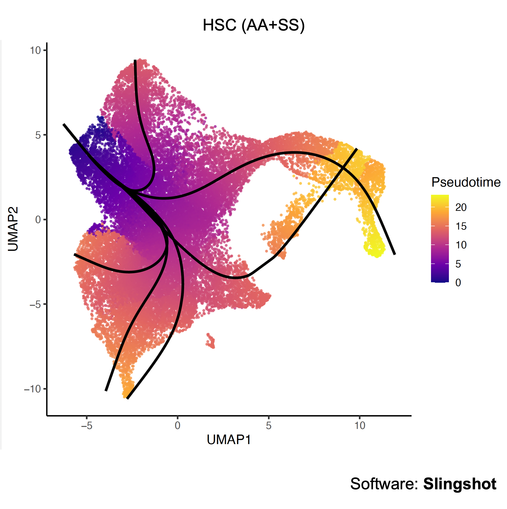
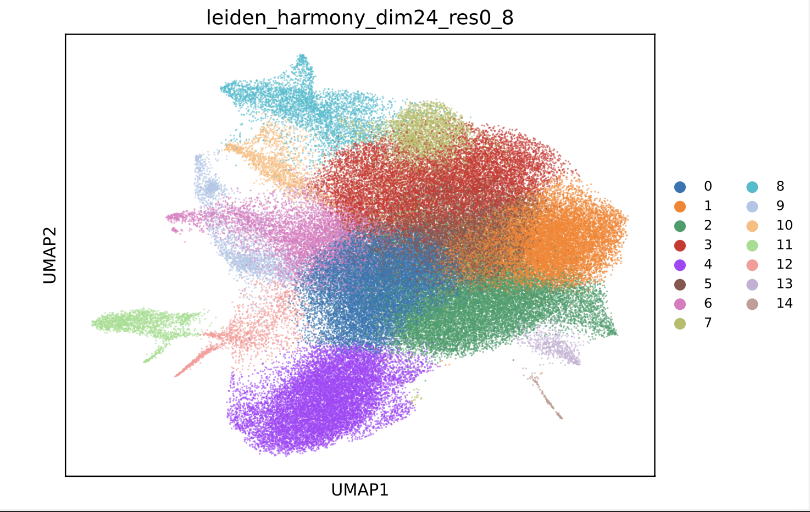
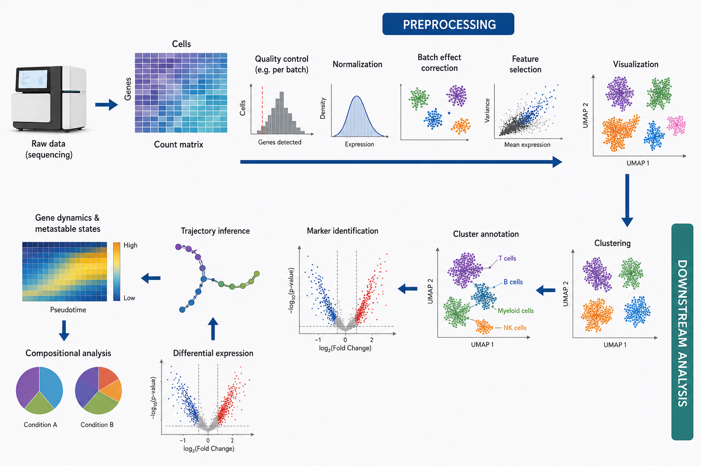
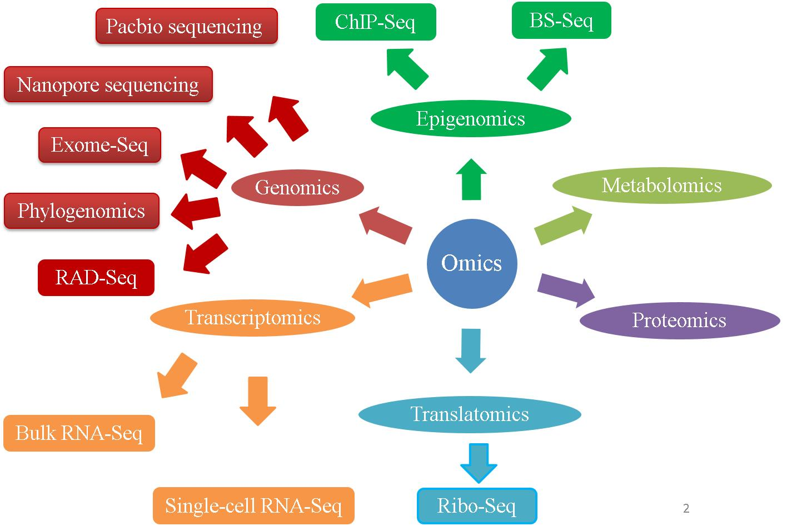

Core expertise
- Single-cell RNA-seq analysis
- Bulk RNA-seq and transcriptomic profiling
- Differential expression analysis
- Functional enrichment and pathway analysis
- Data visualisation and reproducible workflows
BaHSic — Blood group Antigens, Hematopoiesis and Sickle cell disease
Hematopoiesis & Translational Research: blood cell biology, multi-omic approaches, and translational studies.
Contact (+33) 1 81 72 43 14 sara.bencheikh@inserm.fr
Location Hôpital Necker – Enfants Malades 149 rue de Sèvres 75015 Paris
Platforms & Technologies
Our bioinformatics and omics platform supports the analysis of high-dimensional biological datasets, from single-cell transcriptomics to integrative multi-omics studies, with a strong focus on hematopoiesis, red blood cell biology, and translational research.


We develop and apply analytical workflows that transform complex omics datasets into interpretable biological results. These analyses include preprocessing, quality control, integration, clustering, statistical testing, pathway enrichment, and the generation of publication-ready figures.
Particular attention is given to robustness, reproducibility, and the biological interpretation of results in the context of red blood cell disorders, inflammation, hematopoiesis, and sickle cell disease.

The platform is designed to support a wide range of datasets and analytical questions, including single-cell transcriptomics, bulk gene expression profiling, proteomics-oriented datasets, and integrative approaches that combine molecular and cellular measurements.
Our analyses are tailored to the needs of each project, from exploratory profiling to hypothesis-driven studies and translational applications.